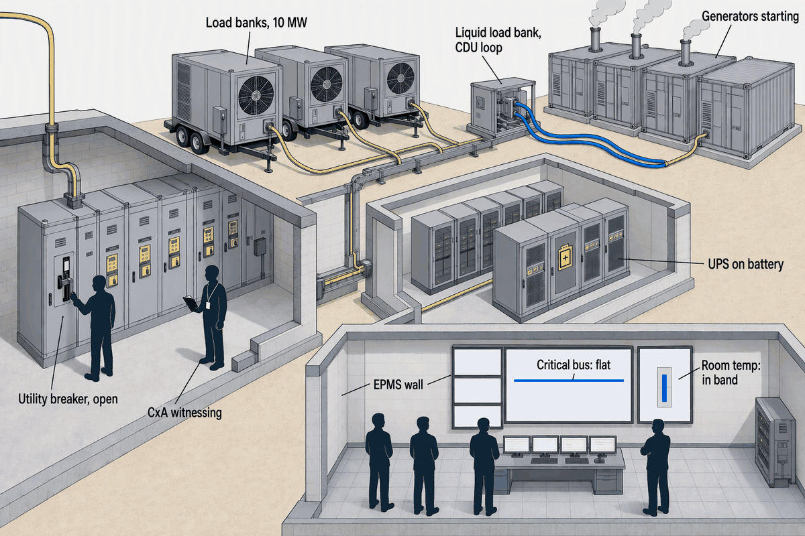
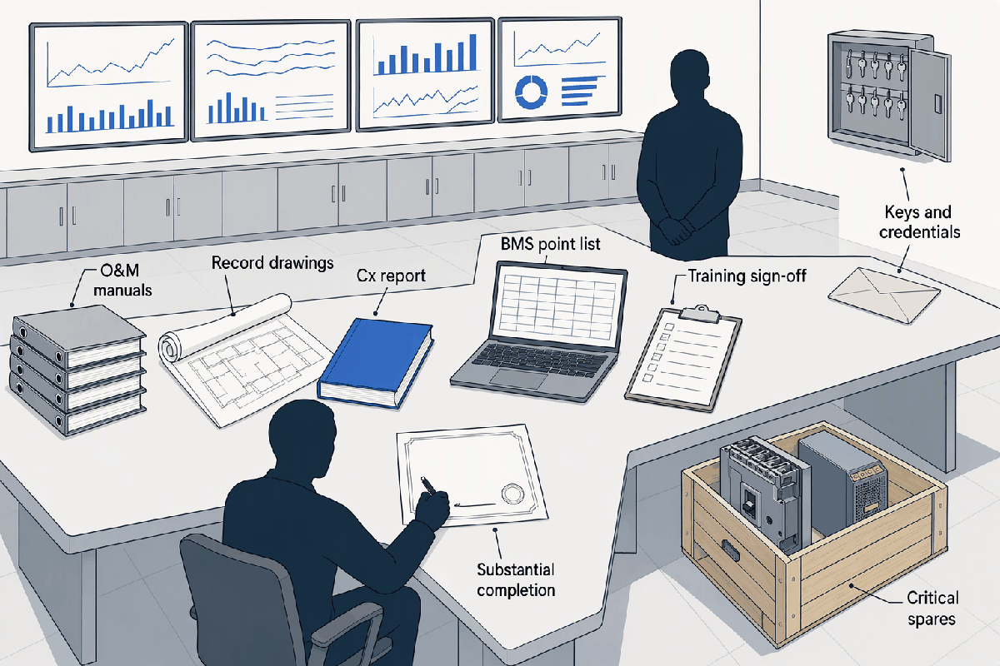
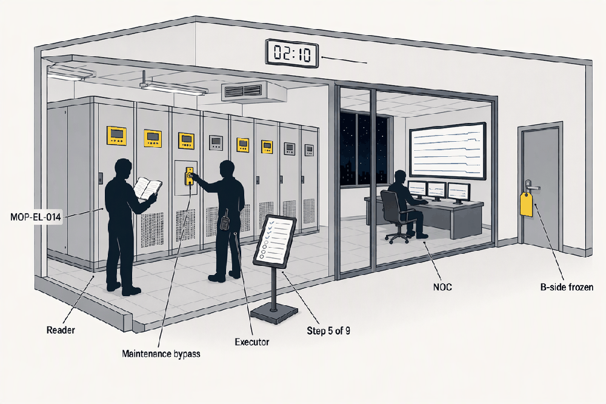
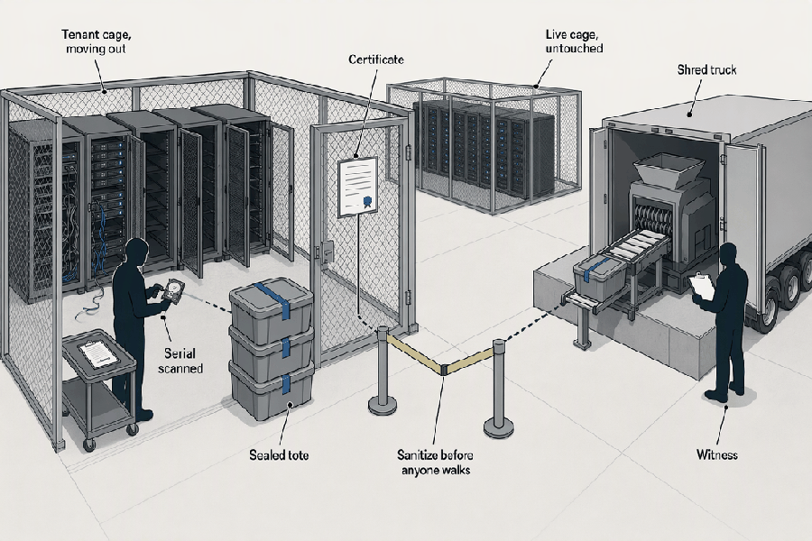

Commissioning, Operations and Decommissioning
Deep detail and sources: the appendix for this topic. Short version: sixty words.
Topics 2 to 10 designed and built the hall. This chapter proves it does what the owner's requirements said, runs it for twenty years without letting anyone break it, and takes it apart with a certificate per drive. The discipline is the same at every stage: a witness for every test, a script for every change, a drill for every failure.
- 12–16 weeksLevels 3–5 for a 10 MW hall, from energization at T+38Proof begins when power arrives, not when the building is finished
- 0.5–2%Commissioning as a share of construction cost; $2–10M for the campusCheap against one failed integrated test
- > 85%Designs Uptime finds incorrectly executed in constructionThe reason a witness exists at all
- ~40%Operators with a human-error major outage in three years; 85% of those procedural (Uptime 2025)The procedure is the control
- 5–10%Retainage, half held to the end of the defects periodMoney follows proof, in steps
- 300,000Net new staff the industry needed 2019–2025 (Uptime forecast)The scarcest input is people
The five levels
- Level 1, factory witnessT+30–35The unit meets its spec on the bench: gensets, UPS, switchgear, CDUs
- Level 2, receivingT+30–38It arrived as shipped, checked against the submittal
- Level 3, start-upT+38–39Each device runs in place; NETA ATS-2025 before energization
- Level 4, functionalT+39–41Each system runs its own sequence, normal and fault, on load banks
- Level 5, integrated systems testT+41–42Everything together at design load, riding failures
- Substantial completionT+42Hall 1 live; the money gates open
- Uptime TCCFT+43The ops team does it again while Uptime watches
The ladder climbs from one component to the whole plant, and its rungs are the last four months of Topic 3's timeline. Energization at T+38 is when proof begins, not when the hall is done; the building has been finished since T+34 (APX-commissioning §1).
| Level | Where | Who executes | Who witnesses | Duration, 10 MW | What typically fails |
|---|---|---|---|---|---|
| 1 Factory witness | OEM works | OEM | Owner or CxA, some | Days per unit | Manufacturing defects, spec mismatch |
| 2 Delivery | Site receiving | GC and subs | CxA or owner | Ongoing | Shipping damage, wrong configuration |
| 3 Start-up | Site | OEM and subs | CxA | 3–5 weeks | Terminations, install errors |
| 4 Functional | Site, on load banks | Subs and OEM | CxA, about 100% | 4–6 weeks | Sequence errors, breaker settings, BMS points mis-mapped, loops hunting |
| 5 IST | Whole plant, on load banks | CxA-led | CxA, owner, Uptime if TCCF | 2–4 weeks | Paralleling, ATS timing, cooling ride-through, leaks |
Failures live in the crevices between systems, which is why the levels end with everything at once. The CxA's witness share rises with the level: some factory tests, all of Levels 4 and 5 (APX-commissioning §4).
Five is a convention, not a standard
- The numbered levels are an industry habit layered on ASHRAE Guideline 0-2019 and Standard 202, which describe phases (pre-design, design, construction, occupancy), not levels. Programs run from Level 0 (design review) to Level 7 (a first-year check-in); five is the common cut.
- Electrical acceptance follows ANSI/NETA ATS-2025, whose 2025 edition adds §7.28 for battery energy storage and UPS; the work is done by a NETA Accredited Company before anything is energized.
- Tags follow the levels on site: red at the factory, yellow at receiving, green at start-up, blue at functional, white at IST (APX-commissioning §1).

The most expensive rehearsal of the project: everyone who built the plant in one room, a rented 10 MW of heat outside, and pass means the trace on the wall never moved. The full scenario, step by step with its pass criteria, is in APX-commissioning §2.
Who proves it
| Role | Hired by, reports to | Job | Independence |
|---|---|---|---|
| CxA | Owner, separate agreement | Writes or approves the Cx plan, witnesses, verifies the OPR is met, issues the Cx report | the point of the role |
| Owner's engineer | Owner | Design intent, submittals, the owner's technical interest | independent, design-focused not test-focused |
| Engineer of record | Design team | Owns and stamps the design | cannot witness its own design |
| Design-builder QA/QC | Design-builder | Checks its own work meets spec before offering it for test | self-check |
Every party but one wants the test to pass. The CxA is paid by the owner under its own agreement so a failed test cannot be buried by the party that built it; ACG firms may hold no ties to contractors or manufacturers (APX-commissioning §5).
Cx versus Uptime's TCCF, and the TIA-942 alternative
| Dimension | Commissioning, Levels 1–5 | Uptime TCCF |
|---|---|---|
| Run by | The CxA, as the owner's agent | The owner's ops team, witnessed by Uptime |
| Measured against | Project spec, OPR and BOD | The Tier Standard: Topology |
| Verdict | Findings and a punch list, iterative | Binary: meets the Tier objective or not |
| Adds | Proof the systems work as specified | An as-built check against the drawings and a Tier-graded demonstration |
| Prerequisite | None | Level 5 IST completed first |
| Duration | Weeks; 12–16 for a 10 MW hall | 3–5 days on site |
| Cost | 0.5–2% of construction | Not published; third-party estimates $150–400k for Tier III (verify) |
TIA-942 rating audits are the alternative: performed by TIA-licensed certification bodies rather than the standard's author, covering site, architecture, security, fire, telecom, electrical and mechanical with a rating per domain, valid three years, at roughly $20–50k (verify) (APX-commissioning §6).
Acceptance and money
- Level 4 functional tests passed
- every system's sequence proven under normal and fault
- Level 5 IST passed; PUE ≤ 1.4 thermal run at design load
- the plant proven as a whole
- Punch list priced
- the value of what remains, deducted
- Substantial completion
- usable for purpose; balance paid less punch value; delay damages stop; workmanship warranty starts; half of retainage released
- Defects liability period, 12 months
- defects fixed under warranty; OEM warranties have been running since delivery
- Final completion and final account
Money follows proof in steps, and the definitions decide who holds it: tie substantial completion to named tests, not to generic language. Topic 12 follows this dollar; here the gates are named (APX-commissioning §7).

What is on the table is what operations has on day one. What most often goes missing is the corrected as-builts, the final point lists and the breaker settings files: the exact things the first fault will need. The owner's crew was embedded through Levels 4 and 5 so it learned the plant by testing it (APX-commissioning §7).
Running it: procedures
| Attribute | SOP | MOP | EOP |
|---|---|---|---|
| Covers | Routine, repeatable tasks | One specific state-changing action | An abnormal or emergency condition |
| Trigger | Schedule | Planned change | Alarm or fault |
| Detail | Framework | Step by step, expected result per step, rollback | Decision-first, usable under pressure |
| Example | Monthly BMS rounds | MOP-EL-014, UPS Block A to maintenance bypass | Loss of utility; coolant leak |
| Approval | Ops management | Change advisory board | Pre-approved and drilled |
| Review | On a cycle | On a cycle, and after any failed check or incident | After every drill or use |
The SOP keeps the hall consistent, the MOP controls the one moment redundancy is deliberately reduced, the EOP is for when it was reduced without asking. Uptime's finding that 85% of human-error outages are procedural is the reason all three exist and are drilled (APX-commissioning §8).
MOP-EL-014 Rev 3, "Move UPS Block A to maintenance bypass", the skeleton
- ID and revision: MOP-EL-014 Rev 3; effective 2026-01-15; next review 2026-07-15.
- Objective: transfer UPS Block A to maintenance bypass for filter and capacitor work while conditioned power stays on the critical load.
- Scope: UPS Block A, one of the six 2.5 MW blocks, and its static and maintenance bypass; Hall 1 A-side only.
- Roles: lead technician executes; second technician verifies each step; shift engineer authorizes; NOC monitors; OEM field engineer on call.
- Redundancy state: declared reduced for the window; CAB-approved; low-risk window.
- Prerequisites: B-side proven at full capacity; batteries healthy; the EOP for loss of bypass source staged; comms check with the NOC; PPE per NFPA 70E; no concurrent A-side work.
- Nine steps, each with an expected result and initials: notify; confirm B-side; verify bypass source live; command UPS A to static bypass; close maintenance bypass breaker; open UPS isolators; confirm critical bus stable; perform the work; reverse to normal.
- Rollback: at any failed check, stop and revert to the last known-good state per the embedded EOP; escalate.
- Completion: NOC notified, log updated, redundancy confirmed restored. Full text in APX-commissioning §8.

Concurrent maintainability is a topology in Topic 6 and a two-person ritual at two in the morning here. The design guarantees the hall survives losing the A side; the MOP is what keeps anyone from also touching B.
- Alarm on BMS or EPMS
- Topic 10's systems raise it
- Shift executes the EOP
- safe state first, redundancy restored
- Severity assigned, escalation
- shift engineer, ops manager, OEM field engineer within the 15–30 min contract response
- Root-cause analysis
- what actually happened, and why the procedure allowed it
- Change advisory board
- MOP or EOP revised, a setting changed, a spare stocked
- Monthly tenant report
The loop ends in a revised procedure and, if the band broke, in money leaving the operator's opex. Topic 12 narrates one incident end to end; here the path is fixed (APX-commissioning §8).
What actually causes outages, Uptime 2024 data
- Power remains the top cause of impactful outages, cited by 54% of operators; cooling about 13%, network about 12%.
- Across all outages regardless of severity, IT and networking account for 53%, mostly change management and misconfiguration.
- Nearly 40% of organizations had a major human-error outage in three years; 85% of those stem from staff not following procedures or from flawed procedures. A secondary report puts the share who simply did not follow the procedure at 58%, up from 48% (verify).
- 50% of operators had an impactful outage in three years, down from 53%; only about 10% of outages are serious or severe (APX-commissioning §8).
Running it: maintenance
| System | Cadence | Standard | What it proves | The constraint |
|---|---|---|---|---|
| Generators | Weekly inspection; monthly ≥ 30 min at ≥ 30% plus ATS exercise; annual load bank 50% for 30 min then 75% for 1 h; 4 h every 36 months | NFPA 110 Ch. 8 | It starts, takes load, does not wet-stack | The air permit's run-hour cap |
| Electrical gear | Annual infrared scan, breaker servicing, relay tests | NFPA 70B, a standard since 2023; NETA MTS-2023 | A hot joint before it fails | Needs an outage window or live-work PPE per 70E |
| Batteries | LFP watched by its BMS; thermal-runaway detection | NFPA 855; OEM | Cells in band | VRLA would have needed weekly rounds and loses half its life per ~8 °C above 25 |
| UPS | Filters and capacitors, on bypass under MOP | OEM; RCM | The block returns to normal | Redundancy reduced for the window |
| Cooling and CDU | Chiller changeover, loop chemistry, filter differential | OEM; CBM | Flow and cleanliness | Hot work beside live pods is refused |
Maintenance is itself an outage cause, so every task is a risk trade governed by a MOP and a window. The generator cadence is the one a permit fights: a hot-metro air permit caps run hours the test schedule would otherwise fill (APX-commissioning §9).
- what the colocation SLA promises, 99.999%1–5.3 min/yr
- what Tier topology designs to, indicative26–96 min/yr
- below Tier III96–1728 min/yr
- SLA, 99.999%5.3 min/yr
- Tier IV, 99.995% (Topic 2)26 min/yr
- Tier III, 99.982%, the reference hall96 min/yr
- Tier I1728 min/yr
The SLA promises eighteen times tighter than the topology's own indicative number, and the comparison is definitional: Uptime removed the percentages in 2009 (Topic 6). The gap is closed by operations and fast repair, or by credits; that is why staff, a small line in the opex, is the largest lever on it (APX-commissioning §10).
Running it: people
- Facilities and critical engineering114–5 shift crews, 24/7; in-house core plus OEM contracts
- Security724/7; outsourced
- NOC and monitoring4.5in-house or outsourced
- Management3.5site director, ops manager, Cx/QA, admin
- Remote hands2.5billable to tenants
Half the people keep the plant alive around the clock and a quarter guard the door. The whole payroll, $3–4.5M a year against ≈ $65M of opex and ≈ $34M of electricity, is a rounding error next to the power bill and the single biggest lever on the SLA credits that bill funds. Topic 1's 60 people and $7.8M at 40 MW are reconciled in APX-commissioning §10.
| Model | FTE per MW | Who holds procedure adherence | Scales how | Where used |
|---|---|---|---|---|
| Hyperscale automated campus | 0.2–0.3; 20–30 per 100 MW | Owner | Standard designs, remote NOC | > 100 MW, single tenant |
| Reference hall, day one | 2.5–3.2 | In-house core | The fixed shift minimum dominates at 10 MW | Tier III colo with AI pods |
| Reference hall at 40 MW | 1.25–1.45 | In-house core | Shifts amortized over four halls | Same |
| Fully outsourced FM | Similar counts, on the vendor's payroll | The vendor; the owner still holds the SLA | Portable, cheaper to flex | Enterprise and some colo (CBRE, JLL) |
| Lights-out or AI-run | Nobody on site, aspirational | Nobody | Trusted for sensor analytics and predictive maintenance, not for control or configuration | Not mainstream Tier III in 2026 |
The 24/7 floor sets the count at 10 MW, which is why FTE per MW halves as the campus fills. Outsourcing moves the payroll, not the risk: procedure adherence is the number one outage cause and the owner still carries the SLA (APX-commissioning §10).
The shortage behind the org chart
- Uptime forecast staff requirements rising from about 2.0M FTE in 2019 to nearly 2.3M in 2025, some 300,000 net new people (published January 2020, so dated).
- In 2025 operations management was the worst skills gap, cited by 39% of operators; nearly two thirds struggle to retain staff, find candidates, or both.
- About 42% reported losing key staff to competitors offering 15–25% raises, notably in Northern Virginia and Phoenix (CBRE, 2025).
- AI-density builds need scarcer high-voltage and liquid-cooling skills on top (APX-commissioning §10).
Retiring it
| Media | Clear | Purge | Destroy | Verify |
|---|---|---|---|---|
| HDD | Single-pass overwrite, sufficient per Rev. 2 | Overwrite, block erase, firmware sanitize | Shred to IEEE 2883 particle size | Read-back sample plus validation |
| SSD and NVMe | Overwrite, unreliable | Cryptographic erase or firmware block erase | Flash-appropriate shred; coarse shred insufficient | Key-destruction proof plus validation |
| Self-encrypting drive | n/a | Cryptographic erase: delete the key | Physical | Key erased |
| Tape and optical | Overwrite | Degauss, tape only | Shred or incinerate | Visual plus record |
| Cost | Lowest | Low to moderate | Highest, plus lost residual value | The defensible proof |
Flash ended the overwrite era: wear-leveling hides blocks no software pass reaches, so the reliable purge is destroying the key. Rev. 2 made the method simpler and the paperwork stricter at once (APX-commissioning §11).
What Rev. 2 changed, 26 September 2025
- Rev. 1 (2014) was withdrawn the same day. The three methods stay: Clear, Purge, Destroy.
- The per-media technique tables are gone; device technique selection defers to IEEE 2883-2022 and NSA/CSS specifications.
- Verification (the process ran) is now formally distinct from validation (nothing is recoverable), and the document is built around a documented sanitization program.
- A single-pass overwrite is confirmed sufficient to Clear an HDD; Purge is preferred over Clear wherever possible; overwriting SSDs is declared inadequate.
- Degaussing is not a Destroy technique under Rev. 2 and does nothing to flash (APX-commissioning §11).

Custody is unbroken only if a serial number is scanned at every hand-off and the destruction is watched. The breaches happen downstream, at a subcontractor the certificate never covered, which is why the vendor's R2v3 and NAID AAA are lease terms (APX-commissioning §11).
- Substantial completion, TCCFyear 0Defects period runs; the operations team owns the risk
- Final completionyear 1Retainage closed; M&O Stamp pursued; first-year Cx findings fed to Phase 2's OPR and BOD
- Phases 2–4 commissioned beside a live hallyears 2–4No hot work in the aisle; IST must not disturb Hall 1
- IT refresh and ITADevery 3–5 years; AI pods 18–36 monthsSanitize, certify, remarket before residual value falls
- UPS capacitorsyears 5–7Under MOP, on bypass, one block at a time
- UPS frames; CRAHyears 8–15; ~12The mid-life MEP refresh, ~12% of capex (Topic 1)
- Chiller rebuildyears 10–15Plant swapped beside live load
- Chillers and switchgear replaced; halls repurposedyears 15–25Air halls rebuilt for denser, liquid-cooled tenants
- Generatorsyears 25–30Last of the plant to go
- End of lifemake-goodRefrigerants, diesel tanks, lithium, SF6 and coolants disposed under their rules
The plant is retired in layers, batteries first and generators last, and the hall itself is rebuilt for a denser tenant long before the shell is done. Each layer's end is a commissioning event beside live load, which is why Phase 2 is commissioned the hard way (APX-commissioning §12).
Name the five levels, where each happens, who witnesses it, and which one is "pull the plug".
Level 1 factory witness at the OEM works, witnessed by the owner or CxA for some units; Level 2 receiving at the site, CxA or owner; Level 3 start-up in place, CxA; Level 4 functional on load banks, CxA at about 100%; Level 5 integrated systems test of the whole plant on load banks, CxA plus the owner and Uptime if TCCF follows. Level 5 is pull the plug.
On the reference hall's clock, when does Level 3 start and Level 5 end, how many MW of load bank are rented, and what three things must be true for the IST to pass?
Level 3 starts at energization, T+38; Level 5 ends about T+42, 12–16 weeks later. About 10 MW of load banks, including ~1 MW liquid-cooled units in the CDU loop. Pass means the critical bus never dropped, the room stayed inside the OPR temperature band throughout, and every sequence-of-operations step fired in order.
Who hires the CxA and why can neither the engineer of record nor the design-builder's QA/QC witness in its place? When an owner-furnished genset fails to parallel during the IST, who pays for the re-test?
The owner, under a separate agreement, so a failed test cannot be buried by the party being judged. The engineer of record would be witnessing its own design; the design-builder's QA/QC is a self-check. An owner-furnished genset is the owner's dispute with the OEM, under a warranty that began at delivery, and the design-builder's standby time becomes an owner delay.
What does substantial completion release, stop and start, and when is the second half of retainage paid? Why can an OEM warranty on owner-furnished gear expire before Hall 1 is live?
It releases the contract balance less the punch-list value and half of the retainage, stops delay liquidated damages and starts the workmanship warranty. The second half is paid at final completion after the 12-month defects period. OEM warranties start at delivery, and long-lead OFE delivered at T+30–34 has been sitting for a year by the time the hall is live at T+42.
What triggers a MOP, an SOP and an EOP, who approves each, and how much tighter is the SLA's 99.999% than Tier III's indicative 1.6 hours a year?
A MOP is triggered by a planned change and approved by the change advisory board; an SOP by the schedule, approved by ops management; an EOP by an alarm or fault, pre-approved and drilled. 99.999% is about 5.3 minutes a year against 96 minutes, roughly eighteen times tighter; the gap is closed by operations and fast repair or paid in credits.
Why is overwriting an SSD inadequate, what replaces it, which credential proves someone outside the vendor checked the destruction, and where do ITAD breaches usually happen?
Wear-leveling and over-provisioning hide blocks a software overwrite never reaches. Cryptographic erase (destroying the key) or a firmware sanitize command replaces it. NAID AAA, with its unannounced audits, proves an outside party verified the destruction; NIST 800-88 only establishes what was done. Breaches happen downstream, at subcontractors the primary vendor's certificate does not cover.